Главен фид на вести
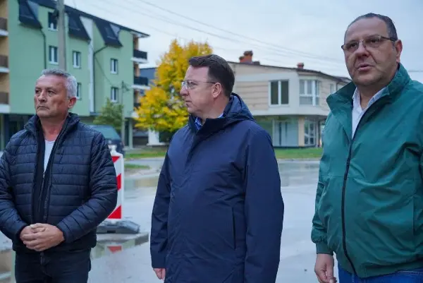
Николоски: Преку 6 милиони евра директна помош за Кичево, инвестираме за инфраструктурен развој на општината
Ова е втората фаза, првата фаза веќе се заврши, ја работевме заедно со Светската банка, така што кога ќе се заврши и втората фаза, ќе имаме еден прекрасен булевар кој што ќе се ...
Трамп вети пет илјади долари за секој Американец доколку републиканците победат на изборите
Американскиот претседател, Доналд Трамп, повторно им вети на Американците по пет илјади долари доколку Републиканската партија победи на конгресните избори закажани за 3 ноември...
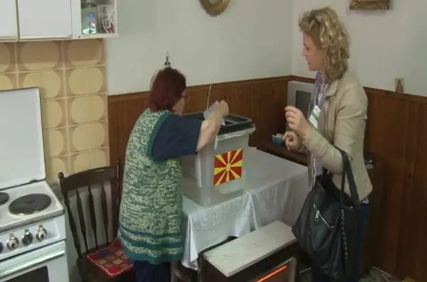
Гласаа 104 болни и немоќни лица и осум лица во казнено-поправните установи за изборите за градоначалник во Брвеница
Вкупно 104 болни и немоќни лица и осум лица кои се наоѓаат во казнено-поправните установи го оствариле своето право на глас во пресрет на вториот круг од предвремените избори за...
Француските средношколци и студенти повикаа на блокади на образовните установи
Синдикатите на средношколците и на студентите во Франција (Union syndicale lycéenne и Union étudiante) денеска пред почетокот на протестите во Париз, повикаа на блокади на образ...
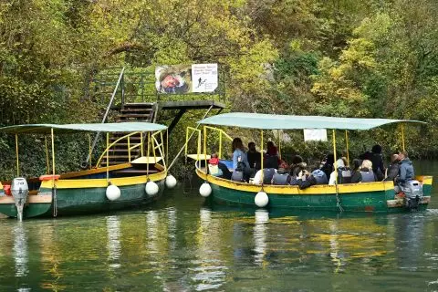
Ѓорѓиевски организира бесплатна посета на Матка, обезбеден и превоз за граѓаните
Град Скопје организираше бесплатен разглед на Матка и пештерата Врело за граѓаните, со организиран автобуски превоз и професионални туристички водичи од Македонската асоцијација...
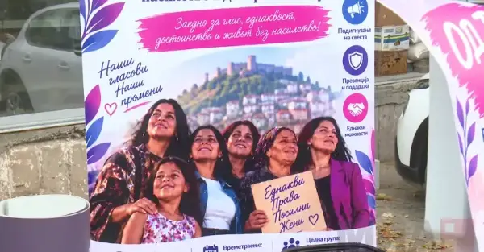
Само осум од 100 жени Ромки се вработени, економската зависност ги изложува на поголем ризик од насилство
Неформираното образование, тешкиот пристап до вработување и економската зависност ги ставаат жените Ромки во особено ранлива положба. Во рамките на проектот, вклучени се и струч...
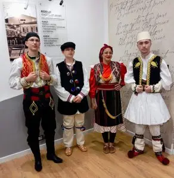
Во Корча промоција на етнокултурното наследство на македонското, ромскот, влашкото и египќанското малцинство
Според Стерјовски, демократско и европско општество е она во кое секој граѓанин се чувствува еднаков, каде што секоја заедница може да го зачува својот идентитет и каде што култ...
Народната банка: Банкарскиот систем е стабилен и отпорен, а сите банки во земјава се под непосреден супервизорски надзор
Во врска со одлуката на Народната банка на Србија за одземање на дозволата за работа на АЛТА банка а. д. Белград, Народната банка посочува дека оваа одлука се однесува на работе...
АЛТА банка АД Битола е ликвидна и продолжува со стабилно и непречено работење
АЛТА банка АД Битола е ликвидна и продолжува со редовно и непречено работење. Воедно, наведуваат дека АЛТА банка АД Битола не е предмет на политички притисоци и пресметки какви ...
Народна банка на Србија ја одзеде дозволата за работа на Алта банка
Извршниот одбор на Народната банка на Србија донесе одлука за одземање на дозволата за работа на „Алта банка“ а. д. Со судска одлука, Агенцијата за осигурување на депозити ќе би...
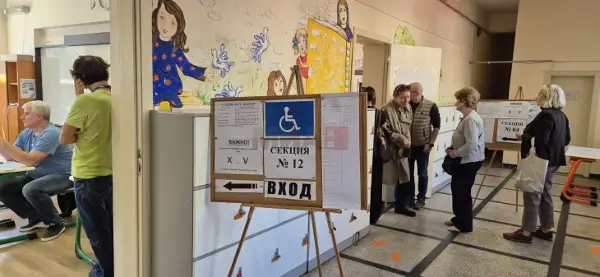
Бугарскиот печат и социолошките аналитичари за прогнозите од вториот круг за избор на претседател
На првиот круг од претседателските и потпретседателските избори кои поминаа во рекордно ниска излезност, за кандидатската двојка Јотова - Валчев гласаа 34,76 отсто од избирачите...
Турски воени авиони го нарушија грчкиот воздушен простор
Во текот на вчерашниот ден во североисточниот, централниот и југоисточниот дел на Егејското Море, биле регистрирани 15 прекршувања на правилата за воздушен сообраќај во FIR Атин...
Демонстрантите во Тирана фрлаат молотови коктели, полицијата возвраќа со солзавец и водени топови
Судирите меѓу демонстрантите и полицијата во Тирана се интензивирале откако дел од демонстрантите фрлале молотови коктели кон полициските службеници. Ситуацијата во областа и на...
Четири лица уапсени по инцидентите пред Уставниот суд во Варшава, полицијата постави кордон
етири лица се уапсени во петокот вечерта во Варшава, за време на инцидентите што се случија пред зградата на Уставниот суд, а полициски кордон и понатаму го обезбедува просторот...
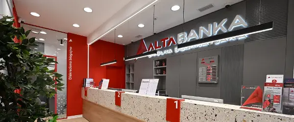
Тешко вооружена полиција го чува седиштето на Алта Банка во Нов Белград
Како што се додава во написот на „Нова економија“, ситуацијата кулминирала вчера наутро кога тим од Народната банка влегол во Алта. Беше свикан вонреден колегиум на банката на к...
Студентската листа бара истрага за Алта банка: Како за четири месеци од висока капитална адекватност до одземена дозвола?
Бараат и одговор кој одлучувал за парите на јавните претпријатија Студентската листа во Србија побара темелна истрага за работењето на Алта банка и за одговорноста на нејзините ...
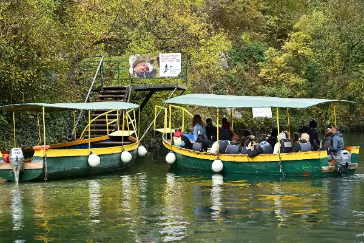
Ѓорѓиевски: Сакаме што повеќе граѓани да ги запознаат природните богатства на Скопје
Град Скопје организираше бесплатен разглед на Матка и пештерата Врело за граѓаните, со организиран автобуски превоз и професионални туристички водичи од Македонската асоцијација...
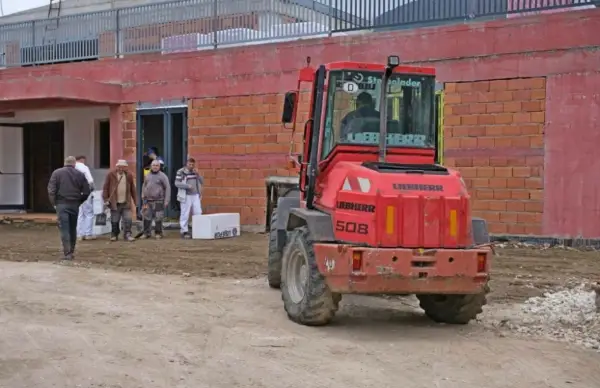
Нова детска градина во Козле со капацитет за згрижување на 146 деца – ќе има и подземен паркинг
Во скопската населба Козле интензивно се гради новата детска градинка „Пролет 2“, која ќе има капацитет за згрижување на 146 деца и ќе биде изградена според современи стандарди....
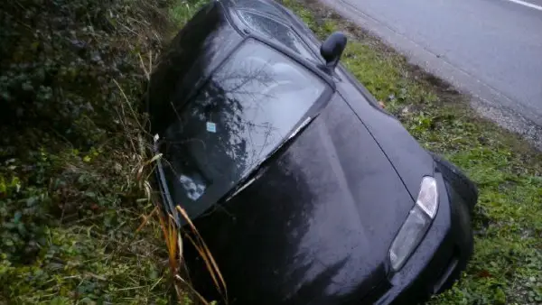
Автомобил излетал од автопатот кај Трубарево и завршил во двор на куќа - двајца се тешко повредени
Две лица се здобиле со тешки телесни повреди во сообраќајна несреќа што се случила ноќеска на автопатот „Пријателство“, во близина на скопското село Трубарево, информираат од Ми...
Гацов: АЛТА банка АД Битола е македонска банка под надзор на Народната банка, нема простор за паника
Економскиот и даночен експерт Павле Гацов порача дека АЛТА банка АД Битола е македонска банка која работи според домашните закони и е под надзор на Народната банка, без оглед на...
пред 5 часа
На денешен ден се сеќаваме на битолчанецот академик Томе Бошевски
Роден на 8 октомври 1937 година, Бошевски го продолжил образованието во Белград, каде студирал техничка физика на Електротехничкиот факултет.
пред 6 часа
ЗА 26 ЗЛАТНИ НАПОЛЕОНИ – БИТОЛСКИ ТРГОВЕЦ И НЕГОВАТА СОПРУГА ЗАВРШИЛЕ СО ЧЕТИРИ МЕСЕЦИ ЗАТВОР: ЗАБОРАВЕН СУДСКИ СЛУЧАЈ ОД 1938 ГОДИНА
Една необична судска приказна од стара Битола, во која се испреплетуваат трговија, пари, даден збор и лажно сведочење, е зачувана на страниците на белградскиот весник „Правда“ о...
пред 6 часа
Мерцедес излетал од автопатот „Пријателство“ и завршил во двор на семејна куќа, двајца тешко повредени
Двајца мажи се тешко повредени во сообраќајна несреќа што се случила ноќеска на автопатот „Пријателство“, во близина на скопското село Трубарево, откако автомобил „мерцедес“ изл...
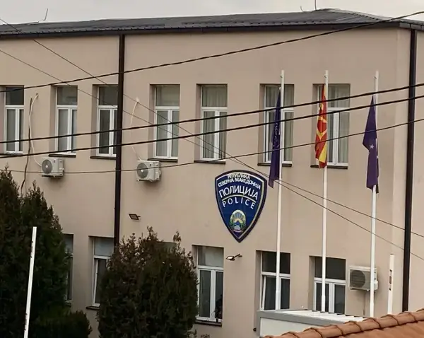
Исчезна 15 годишно девојче од Куманово
Петнаесетгодишно девојче доцна синоќа било пријавено за исчезнато во полициската станица во Куманово од страна на нејзиниот брат. Девојче (15) доцна синоќа е пријавено за исчезн...
Со огнено оружје тројца разбојници ограбиле обложувалница во Чаир
Три лица вооружени со огнено оружје ограбиле спортска обложувалница во скопската општина Чаир, од каде со закана кон вработениот одзеле пари од дневниот промет. во 23:54 часот в...
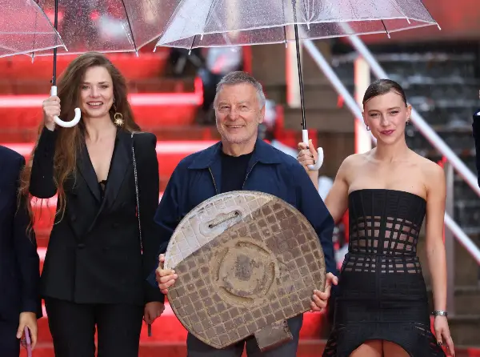
„Сестра, брат и шахта“ на Манчевски со светска премиера во Токио
Им честитам и нему и на целата екипа за премиерата во Токио и им посакувам филмот да продолжи да го привлекува вниманието на меѓународната публика и да бележи успеси на светскат...
ПОЧИНА ХРВАТСКИОТ ПЕЈАЧ МИШО КОВАЧ
Имаше 85 години, а во својата кариера продал повеќе од 20 милиони плочи. Во текот на својата речиси петдецениска кариера, Ковач продал повеќе од 20 милиони плочи и оставил длабо...
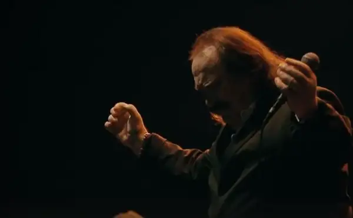
Замолкна гласот на Далмација: Почина легендарниот Мишо Ковач
Со заминувањето на Мишо Ковач, хрватската музика загуби еден од своите најпрепознатливи и најпопуларни изведувачи, чии песни со децении ги пееја генерации слушатели.
пред 4 часа
Кометата што стигна до нас можеби е стара дури 12 милијарди години
Кометата 3I/ATLAS, која пристигна во нашиот Сончев систем од меѓуѕвездениот простор, може да содржи материјал стар дури 10 до 12 милијарди години.
пред 1 час
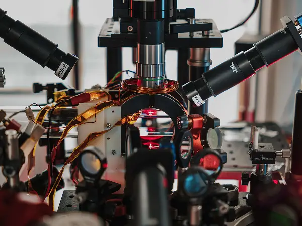
Филипински физичар создаде мини-универзум за мерење на времето без часовник
Експериментот во Бирмингем покажува дека затворениот квантен систем не бара апсолутно време за да функционира динамично.
пред 1 час
Корпоративна алчност: Шефот на OpenAI смета дека луѓето немаат потреба од РАМ, само дата-центрите
Главниот извршен директор на OpenAI, Сем Алтман, предизвика остри реакции во технолошката заедница со изјавата дека персоналните компјутери непотребно трошат одограничената свет...
пред 1 час
Почина Мишо Ковач
Роден е на 16 јули 1941 година во Шибеник. На 85-годишна возраст почина Мате Мишо Ковач, легендарниот пејач од Шибеник, еден од најпопуларните музичари на поранешна Југославија,...
Осумнаесет композиции на втората фестивалска вечера на „Макфест“
На втората фестивалска вечер на „Макфест“ ќе се слушнат вкупно 18 композиции, од кои шест се од синоќа, кои ги избра публиката и жири комисијата. Шест композиции влегуваат од пр...
Синот на Том Круз и Никол Кидман се појави по речиси две години: Еве како изгледа денес
Посвоениот син на Том Круз и Никол Кидман, Конор Круз, се појави во јавноста по речиси две години отсуство од социјалните мрежи.
пред 26 минути
Баерн испушти победа во финишот со Борусија Дортмунд
Баерн Минхен ремизираше 2:2 вечерва со Борусија Дортмунд во 8. коло од германската Бундеслига. Борусија Дортмунд има исто така 18 и е втор во поредокот. Баерн Минхен води во Бун...
Манчестер сити загуби од Брајтон и го запиша својот втор последователен пораз во Премиер лигата
Манчестер сити загуби со 1:0 дома од Брајтон во деветтото коло од Премиер лигата. Со 21 бод, Манчестер сити останува на врвот на табелата, пред Арсенал. Единствениот гол го пост...
(Видео) Кејн промаши пенал, Борусија во 89-та минута освои бод во Минхен
И покрај кадровските проблеми, Баерн постигна гол за водство, о 38-та минута преку Лајмер, по додавањето од Олисе. Баерн и Борусија Дортмунд одиграа нерешено 2:2 во големото дер...
Скелет на на новооткриен вид диносаурус продаден за над 47 милиони долари
Откриен нов вид диносаурус од фосил што бил „занемарен“ над 100 години Се очекуваше овој месојад од доцната креда да достигне цена од најмалку 9 милиони долари; сепак, по 12-мин...
Убава и брза бајадера со вкус на бадеми и бело чоколадо
Состојки 50 грама мелени ореви 2 големи лажици мелени бисквити 50 грама шеќер 50 грама шеќер во прав 2-3 големи лажици вода 1 пакетче ванилин шеќер по вкус ароматичен ликер 100 ...
Макфест во знакот на големите музички имиња
Вечерва публиката ќе проследи вкупно 18 композиции, од кои шест се избраните од првата вечер, додека останатите 12 се нови песни, подготвени специјално за оваа фестивалска прогр...
Лето 🎵 | ЈЕЕЈ!
Лето 🎵 | ЈЕЕЈ!
Oct 30, 2026
360° сезона 13, емисија 14 Од доверба на колегите до доверба на јавноста–тест за Искра Хаџи Василева
Саботажа сезона 13 бр. 13
Саботажа сезона 13 бр. 13
Oct 26, 2026